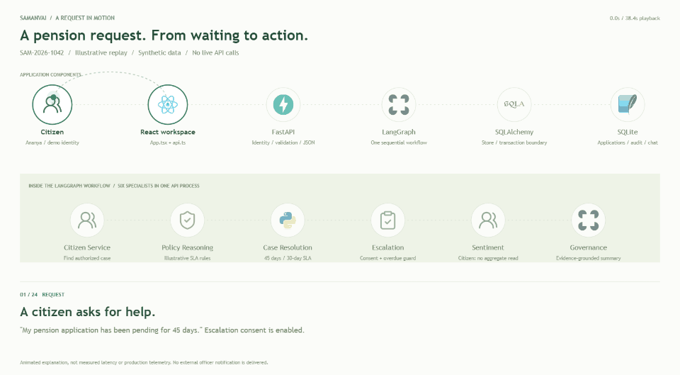

ENGINEERING REFERENCE / 02
A request. Every stage accounted for.
The technology stack from citizen input to persisted action, model synthesis, HTTP response, and the dashboard refresh that follows.
18 October 2026
ANIMATED WALKTHROUGH / SYNTHETIC PENSION CASE
Watch one request move through the system.

Loading the animated journey...
Illustrative replay only. Playback duration is not request latency. The scenario performs no live API calls and takes the deterministic, no-Gemini path.
View the saved looping GIF

02.1 / TECHNOLOGY CHAIN
The components in the path.
02.2 / REQUEST & RESPONSE SEQUENCE
Follow a chat request end to end.
Read down the sequence. Dashed arrows are returns or conditional calls. Scroll inside the diagram for all stages; the stage register below is its accessible text equivalent.
Loading the local sequence configuration...
02.3 / STAGE REGISTER
Who receives, acts, and responds.
| Stage | Caller > responder | Processing / payload | Evidence / source |
|---|
02.4 / TELEMETRY & BUSINESS EVIDENCE
What is recorded, and where.
| Signal | Producer > sink | Fields / behavior | Limitations |
|---|
02.5 / OTHER REQUEST PATHS
Not every endpoint runs agents.
| Endpoint | Execution path | Response / persistence |
|---|
02.6 / FAILURE & DEPLOYMENT BOUNDARIES